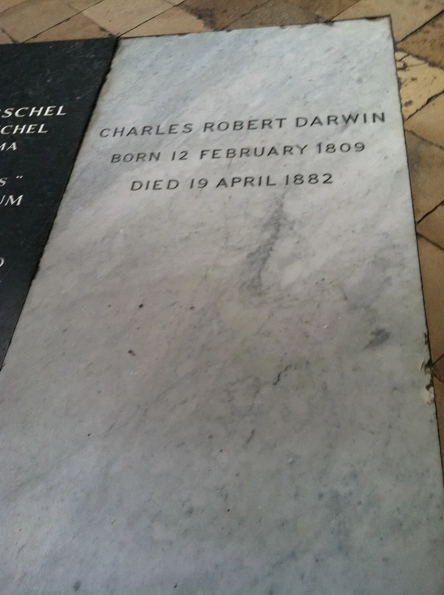

This Christian argument does not hold up. Drop it.
The story is that Charles Darwin gave up evolution on his deathbed and turned to Christ. The source is Lady Hope, whose name was Elizabeth Hope.
She was a British evangelist. In 1915 she told a gathering in Massachusetts that she had visited him near the end.
She said she found him reading Hebrews and sorry for his theory.
Darwin died in 1882. That is thirty-three years before she told the story.
His family were there. They denied it flatly.
His daughter Henrietta Litchfield wrote in print in 1922: "I was present at his deathbed... He never recanted any of his scientific views, then or earlier." Darwin died an agnostic, kind about a faith he did not share.
No serious historian credits the tale. James Moore's The Darwin Legend is the careful study of it.
Answers in Genesis lists the story among arguments to avoid.
A theory stands or falls on evidence. It does not stand or fall on what its author felt at the end.
Christianity would not be undone by a deathbed change of heart from one of Paul's biographers. Evolution is not undone by one from Darwin.
Telling it does two kinds of damage. It spreads something false.
And it tells your listener that your case needs a false thing. The command against bearing false witness has no exemption for apologetics (Exodus 20:16).
If it comes up, debunk it first, yourself. Nothing builds trust with a skeptic faster than watching a Christian kill a convenient legend on principle.
"That story isn't true. His daughter denied it in print, and I'm not going to repeat it."

There is nothing to defend here: even creationist groups say the story is false.
There is no counter to steelman. The skeptic is right and the historians are right. Even the big creationist groups agree the story is false. Answers in Genesis lists it among arguments to avoid, and James Moore's The Darwin Legend is the scholarly autopsy.
The family denied it at the time. The gap is thirty-three years. Nothing backs it up. A Christian repeating it is bearing false witness about a dead man, for a point that would be worthless even if it were true.
Don't use it, ever: there is no exemption for false witness.
Don't use, ever. The command against false witness does not have an apologetics exemption.
If it comes up, the Christian's move is to debunk it first. Nothing builds trust with a skeptic faster than watching a believer kill a convenient legend on principle.